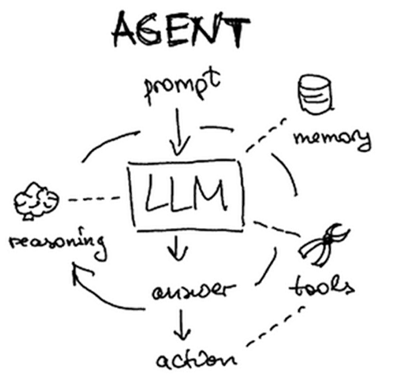
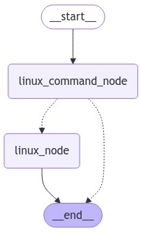
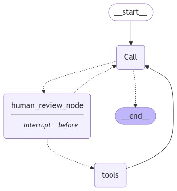

Agents have the ability to write their own plans, execute its parts, and update the plans during execution, making them extremely powerful tools for automating tasks. LangChain comes with support for building agents. In this lab, we'll experiment with a number of agents, leverage built-in tools for allowing them to perform tasks, as well as write custom tools for them to utilize. We will leverage the ReAct agent whose description can be found here. ReAct combines reasoning and action in order to handle a user's request.
Setup
Within the repository, create a virtual environment, activate it, and then install the packages required.
cd cs475-src git pull cd 03* uv init --bare uv add -r requirements.txt
LangChain's documentation for their ReAct implementation can be found here. The original ReAct paper can be found here.
Agents have the ability to plan out and execute sequences of tasks in order to answer user queries. A simple, albeit dangerous example is shown below that utilizes a Python REPL (Read-Eval-Print Loop) tool to execute arbitrary Python code. By combining an LLM's ability to generate code with a tool to execute it, a user is able to execute programs in English. The code instantiates the tool, then adds it to the list of tools as its only tool. Then, it initializes a prompt to instruct the agent to only use the Python REPL to produce a response.
Introduction to the LangChain agent program
This program combines a language model, a Python execution tool, and an agent execution loop. The model decides what Python code to request; LangChain executes the requested tool and returns its result to the model. The model can request another execution or produce an answer. The outer interactive loop accepts questions and displays these events.
The model
llm = ChatGoogleGenerativeAI(model=os.getenv("GOOGLE_MODEL"))This constructs the chat-model interface. The environment variable selects the Google model. The model generates responses and structured tool-call requests; the Python tool performs the actual computation. The selected model must support tool calling.
The system prompt
A system prompt supplies standing instructions for the model's behavior. Here, it assigns a programming role, requires execution before answering, requests debugging after errors, and specifies a fallback:
system_prompt = """You are an agent designed to write and execute python code to answer
questions. You have access to a python REPL, which you can use to
execute Python code. If you get an error, debug your code and try
again. Only use the output of your code to answer the question. You
might know the answer without running any code, but you should still
run the code to get the answer. If it does not seem like you can
write code to answer the question, just return I don't know as the
answer.\n\n"""These are natural-language instructions, not programmatic guarantees. Nothing in the surrounding Python code verifies that every answer follows an execution or is supported by its output. The prompt also does not install the tool: the tool must be supplied separately.
Tools
A tool is a callable capability exposed to the model through a name, description, and input schema. A tool call is a structured request to execute that capability with particular arguments. LangChain dispatches the request and makes the result available to the model.
tools = [PythonREPLTool()]This list contains one tool, which executes Python code in a REPL environment. The model supplies code as the tool's input. The tool executes with the application's permissions; its name does not imply isolation.
for tool in tools:
print(f' Tool: {tool.name} = {tool.description}')This displays the registered tool's name and usage description. It does not execute the tool.
Creating the agent
agent = create_agent(model=llm, tools=tools, system_prompt=system_prompt)The function builds an executable agent graph using LangGraph. The model parameter supplies the chat model; the tools parameter supplies the available executable capabilities; and the system_prompt parameter supplies the standing instructions. This call configures the agent but does not yet answer a question.
The returned agent is a compiled graph, rather than an individual model response. Its control loop calls the model, executes requested tools, and calls the model again with the results. It normally finishes when the model produces a response without tool calls.
Running the agent and streaming its progress
for step in agent.stream({"messages": [{"role": "user", "content": line}]}):This starts a run using the entered text as a user message. The outer dictionary supplies the agent's message state; the inner dictionary identifies the message's role and content. LangChain accepts this dictionary representation, so the imported HumanMessage class is not needed here.
The stream method yields updates as execution progresses. With the default updates mode used by this agent, each step is a dictionary mapping a graph node name to that node's state update. This is step-level progress, not character-by-character or token-by-token output.
For this program, a model entry contains newly produced model messages, while a tools entry contains tool-result messages. The nested messages value is a list of message objects. A step is an update, not necessarily the complete conversation history.
Detecting model output and tool calls
if "model" in step:
message = step["model"]["messages"][0]
if message.content:
print(f"🛠️ Content: {message.content}")
if message.tool_calls:
for tool_call in message.tool_calls:
print(f"🛠️ Tool Call: {tool_call['name']} Args: {tool_call['args']}")The membership test identifies a model update. The next line selects its first message, an AIMessage. Its content contains the model's emitted content, which may be text or structured content blocks depending on the provider.
The tool_calls attribute is the reliable place to detect structured tool requests. The loop prints each requested tool's name and arguments. For the Python tool, the arguments contain the requested Python code. Printing the request does not execute it; execution is handled by the agent graph.
A model message can contain both content and tool calls, so printed content is not necessarily the final answer. The two independent tests allow both to be displayed.
Detecting tool results
if "tools" in step:
message = step["tools"]["messages"][0]
print(f"✅ Tool Result: {message.content}")
print("---")This branch identifies a tool update and prints the first ToolMessage's content. The result is also supplied to the model automatically. The check-mark symbol is only a display label: a tool result can contain an error rather than a successful computation.
Both branches select only the first message using index zero. In particular, an update containing several tool-result messages would have only its first result displayed. The tool-call loop does print every request in the selected model message, so the number of printed requests and results may differ.
Following the example question
Sort the list 12, 35, 40, 22, 10, 3. Then see if the third largest number is prime
A typical run produces a model update requesting Python execution, a tools update containing the computation result, and another model update answering the question. The model might combine sorting and primality testing into one execution or request multiple executions. The program does not prescribe the number of calls.
Each input line starts a new run containing only that user message. The program does not pass earlier conversation messages or configure a checkpointer, so reusing the agent object does not provide conversation memory. However, the same PythonREPLTool instance is reused, and its Python namespace may retain variables across executions; tool state and conversation history are separate.
Documentation used: LangChain Agents (https://docs.langchain.com/oss/python/langchain/agents) and Streaming (https://docs.langchain.com/oss/python/langchain/streaming).
Run the Python REPL agent in the repository. The code implements an interactive interface for performing tasks that the user enters using Python.
uv run 01_tools_python.py
Ask the agent the following requests and examine the output traces to see if they are answered correctly via tool calls to the PythonREPLTool.
If the agent fails to correctly utilize the PythonREPLTool to generate correct results, modify the prompts until correct results are generated via tool calling.
Experiment with prompting the agent with more complex computations such as those you may have been asked to do for programming homeworks.
Agents can utilize any collection of tools to perform actions such as retrieving data from the Internet or interacting with the local machine. LangChain comes with an extensive library of tools to choose from. Consider the program snippet below that uses the SerpApi (Google Search Engine results), LLM-Math, Wikipedia, and Terminal (e.g. shell command) tools to construct an agent. Note that, like the Python REPL tool, the Terminal tool is a dangerous one to include in the application, requiring us to explicitly allow its use.
tools = load_tools(["serpapi", "llm-math","wikipedia","terminal"], llm=llm, allow_dangerous_tools=True)
base_prompt = hub.pull("langchain-ai/react-agent-template")
prompt = base_prompt.partial(instructions="Answer the user's request utilizing at most 8 tool calls")
agent = create_react_agent(llm,tools,prompt)
agent_executor = AgentExecutor(agent=agent, tools=tools, verbose=True)
# agent_executor.invoke(
{"input": "What percent of electricity is consumed by data centers in the US?"}
)Run the program.
uv run 02_tools_builtin.py
Within its interactive loop, ask the agent to perform the following tasks and see which tools it utilizes to answer each prompt.
Agents can perform reasoning tasks that put multiple tools together to generate a result. Experiment with complex queries that exercise a range of tool calls. Examples might include:
For the prompt that contains the most tool calls:
Another useful toolkit is SQLDatabaseToolkit that provides sets of SQL functions to support querying a database using natural language. The code below shows a simple program that takes a SQLite3 database provided as an argument and handles queries against it that are driven by a user's prompt.
from langchain.agents import create_sql_agent
from langchain_community.agent_toolkits import SQLDatabaseToolkit
from langchain.sql_database import SQLDatabase
from langchain_google_genai import ChatGoogleGenerativeAI
from langchain.agents import AgentExecutor
import sys
database = sys.argv[1]
llm = ChatGoogleGenerativeAI(model="...",temperature=0)
db = SQLDatabase.from_uri(f"sqlite:///{database}")
toolkit = SQLDatabaseToolkit(db=db, llm=llm)
agent_executor = create_sql_agent(
llm=llm,
toolkit=toolkit,
verbose=True
)
# agent_executor.invoke("How many users are there in this database?")Using this program, we'll interact with two databases that reside in the repository: metactf_users.db and roadrecon.db (as provided here)
The program in the repository provides an interactive shell for querying a database you supply it. Run the program using the metactf_users.db that is given. It shows the tools and the database
uv run 03_toolkits_sql.py db_data/metactf_users.db
This database is used to store usernames and password hashes for the MetaCTF sites such as cs205.oregonctf.org. Examine the database via the following prompts. Note that you may need to run the query multiple times as the execution of the agent is typically not deterministic.
For each prompt
As before, agents can use reasoning to perform complex tasks involving multiple tool calls. Experiment with prompts that utilize a range of tools. For example, the prompt below should utilize multiple tool calls.
For the prompt that contains the most tool calls:
A more complex database is also included at roadrecon.db. Unless the model being used has a capable reasoning engine, it might be more difficult to use prompts to access the information sought. Run the SQLAgent program using this database as an argument.
uv run 03_toolkits_sql.py db_data/roadrecon.db
As before, examine the database via the following prompts.
For each prompt
Experiment with prompts that utilize a range of tools. For example, the prompts below should utilize multiple tool calls.
For the prompt that contains the most tool calls:
In the SQLAgent examples, the agent must generate a plan for querying the SQL database starting with no knowledge of the database schema itself. As a result, it can generate any number of strategies to handle a user's query, updating its plan as queries fail. While being explicit in one's query can help the SQLAgent avoid calls that fail, augmenting the SQLAgent with knowledge that is known about the database can avoid errors and reduce the number of calls to the database and underlying LLM. Custom tools allow the developer to add their own tools to implement specific functions. There are multiple ways of implementing custom tools. In this exercise, we will begin with the most concise and most limited approach.
@tool decoratorLangChain provides a decorator for turning a Python function into a tool that an agent can utilize as part of its execution. Key to the definition of the function, is a Python docstring that the agent can utilize to understand when and how to call the function. By annotating each tool with a description of what they are to be used for, the LLM is able to forward calls to the appropriate tool based on what the user's query is asking to do. To show this approach, we revisit the SQLAgent program by creating custom tools for handling specific queries from the user on the metactf_users.db database.
The first tool we create, fetch_users, fetches all users in the database using our prior knowledge of the database's schema. This tool allows the agent to obtain the users without having to query for the column in the schema first, as it typically would need to do otherwise.
@tool
def fetch_users():
"""Useful when you want to fetch the users in the database. Takes no arguments. Returns a list of usernames in JSON."""
res = db.run("SELECT username FROM users;")
result = [el for sub in ast.literal_eval(res) for el in sub]
return json.dumps(result)The second tool we create, fetch_users_pass, fetches a particular user's password hash from the database. As before, we use knowledge of the schema to ensure the exact SQL query we require is produced. Note that the code has a security flaw in it.
@tool
def fetch_users_pass(username):
"""Useful when you want to fetch a password hash for a particular user. Takes a username as an argument. Returns a JSON string"""
res = db.run(f"SELECT passhash FROM users WHERE username = '{username}';")
result = [el for sub in ast.literal_eval(res) for el in sub]
return json.dumps(result)Given these custom tools, we can define a SQLAgent that defines them as extra tools so that they can be utilized in our queries.
toolkit = SQLDatabaseToolkit(db=db,llm=llm)
agent_executor = create_sql_agent(
llm=llm,
toolkit=toolkit,
extra_tools=[fetch_users_tool, fetch_users_pass_tool],
verbose=True
)
# agent_executor.invoke("What are the password hashes for admin and demo0?")Run the agent using the metactf_users.db database
uv run 04_tools_custom_decorator.py db_data/metactf_users.db
Test it with queries that utilize both the custom and built-in tools of the SQLAgent.
For each prompt:
One of the common vulnerabilities in SQL databases is an injection attack where syntax of a SQL statement is broken and data sent by the user is interpreted as SQL. Send the agent with the following prompt that contains a SQL injection attack
Repeat the prompt until the fetch_users_pass tool is invoked and examine the tool trace:
The last example intentionally contained a SQL injection vulnerability. As a result of it, when the LLM was prompted to look for the canonical SQL injection user "admin' OR '1'='1", it simply passed it directly to the vulnerable fetch_users_pass function which then included it into the final SQL query string. One way of eliminating this vulnerability is to perform input validation on the data that the LLM invokes the tool with. This is often done via the Pydantic data validation package. LangChain integrates Pydantic throughout its classes and provides support within the @tool decorator for performing input validation using it. Revisiting the custom tool example, we can modify the fetch_users_pass tool decorator to include a Pydantic class definition that input it is being passed is instantiated with (FetchUsersPassInput).
from langchain_core.pydantic_v1 import BaseModel, Field, root_validator
class FetchUsersPassInput(BaseModel):
username: str = Field(description="Should be an alphanumeric string")
@root_validator
def is_alphanumeric(cls, values: dict[str,any]) -> str:
if not values.get("username").isalnum():
raise ValueError("Malformed username")
return values
@tool("fetch_users_pass", args_schema=FetchUsersInput, return_direct=True)
def fetch_users_pass(username):
"""Useful when you want to fetch a password hash for a particular user. Takes a username as an argument. Returns a JSON string"""
res = db.run(f"SELECT passhash FROM users WHERE username = '{username}';")
result = [el for sub in ast.literal_eval(res) for el in sub]
return json.dumps(result)Run the agent using the metactf_users.db database
uv run 05_tools_custom_pydantic.py db_data/metactf_users.db
Test the version using the SQL injection query:
With input validation, the injection has now been prevented.
LangGraph is a library that allows one to easily build multi-agent applications. By allowing a developer to specify the logic of the application in a graph-based workflow, it can simplify the development process. The code below implements a simple "human-in-the-loop" Linux command execution application using LangGraph. It consists of three nodes:
def linux_command_node(user_input):
response = llm.invoke(
f"""Given the user's prompt, you are to generate a Linux command to answer it. Provide no other formatting, just the command. \n\n User prompt: {user_input}""")
return(response)def user_check(linux_command):
print(f"Linux command is: {linux_command}")
user_ack = input("Should I execute this command? ")
response = llm.invoke(f"""The following is the response the user gave to 'Should I execute this command?': {user_ack} \n\n If the answer given is a negative one, return NO else return YES""")
if 'YES' in response:
return('linux_node')
else:
return(END)def linux_node(linux_command):
result = os.system(linux_command)
return(END)A graph can be made for the application using LangGraph. The graph defines the two nodes previously created, then specifies an edge from the start of the graph to the linux_command_node. Then, a conditional edge that is followed based on the results of the user_check is defined. The result of user_check sends the control flow either to the linux_node if the user wishes to execute the command or to the end node if the user does not. Finally, after execution by the linux_node, an edge to the end node is defined.
workflow = Graph()
workflow.add_node("linux_command_node", linux_command_node)
workflow.add_node("linux_node", linux_node)
workflow.add_edge(START, "linux_command_node")
workflow.add_conditional_edges(
'linux_command_node', user_check
)
workflow.add_edge('linux_node',END)
app = workflow.compile()We can invoke code to visualize the graph we just created.
from IPython.display import Image, display
display(Image(app.get_graph().draw_mermaid_png()))
Run the application in the repository.
uv run 06_langgraph_linux.pyTest out several queries:
Generate a complex query that forces the agent to generate and execute multiple Linux commands in order to answer. For example, the prompt below will result in several commands being executed
For the command you generated,
The previous lab provided a simple human-in-the-loop application for generating and executing Linux commands. In this lab, we'll apply the approach to agents. Because agents have the potential of creating significant harm when given the autonomy to produce plans and invoke tools, providing a mechanism for humans to validate the commands and code being executed is helpful.
The program in the repository provides a simple human-in-the-loop tool calling application that utilizes LangGraph. As with the prior LangGraph application, execution is interrupted to allow the user to modify the tool call before it is executed. The program first defines two tools that can be called: an execute_command tool for executing shell commands and a python_repl tool for executing Python code. The tools are then bound to the model we instantiate so it is able to invoke them properly.
tools = [execute_command, python_repl]
llm = Chat...(model="...").bind_tools(tools)After defining the tools, the nodes are created. The entry point of the application is the call_model node for generating code and commands. It takes in a set of conversation messages that include the user's query and invokes the model, returning a response.
def call_model(state: MessagesState):
response = llm.invoke(state["messages"])
return {"messages": [response]}The next node in the graph is the human_review_node. It requires no code because the logic for how to route the tool call is done by a function after execution is interrupted.
def human_review_node(state: MessagesState):
return {}The last node is the tools_node, which uses a pre-built LangGraph component for invoking the tools that have been defined previously.
tool_node = ToolNode(tools)While the nodes themselves are simple, the complexity lies in the conditional edges and the function called after the interrupt. The first conditional edge is route_after_call. This function examines whether to end the execution of the application because we have the results of execution or whether the application has created another tool call to execute that needs to be reviewed by the user. It does so by accessing the most recent message that has been generated in the MessagesState.
def route_after_call(state: MessagesState) -> Literal["human_review", END]:
last = state["messages"][-1]
if isinstance(last, AIMessage) and last.tool_calls:
return "human_review"
return ENDThe next conditional edge is route_after_human.
def route_after_human(state: MessagesState) -> Literal["tools", "call"]:
last = state["messages"][-1]
if isinstance(last, AIMessage) and last.tool_calls:
return "tools"
return "call" If the user wants to modify the tool call, the chat history is modified so that the message type indicates that flow needs to be routed back to the call node. However, if the user was satisfied with the tool call, then the message remains an AIMessage type and flow continues to the tool_node.
The human-in-the-loop feedback mechanism is implemented in get_feedback(). In this function, we pull the proposed tool call out of the message state and prompt the user to approve it. If approved, the message state is left untouched and route_after_human will then pass the tool call to the tools_node for execution. However, if the user entered in input other than, ‘y', then the state is updated, putting a tool message on top of the message history. Flow of execution is then routed back to the call_node when route_after_human is executed. This then allows the call_node to adjust the tool call based on the user's input. Note that the code is manually crafting the feedback to a tool call, since this is what is required to maintain the correct structure of the Chat completion template.
def get_feedback(app, thread):
state = app.get_state(thread)
last = state.values["messages"][-1]
tool_call = last.tool_calls[0]
tool_call_id = tool_call["id"]
tool_name = tool_call["name"]
user_response = input(
"\nPress 'y' to approve the tool call\n"
"or describe how it should be changed:\n> "
)
if user_response.strip().lower() == "y":
return
feedback = ToolMessage(
content=f"User requested changes: {user_response}",
tool_call_id=tool_call_id,
name=tool_name,
)
app.update_state(
thread,
{"messages": [feedback]},
as_node="human_review",
)With all of the components of our application defined, we can then instantiate the graph by creating its nodes, setting its entry point, and defining the edges between nodes. Note that, after the execution of the tool_node, we return back to the call_node for the next task.
workflow = StateGraph(MessagesState)
workflow.add_node("call", call_model)
workflow.add_node("human_review", human_review_node)
workflow.add_node("tools", tool_node)
workflow.set_entry_point("call")
workflow.add_conditional_edges("call", route_after_call)
workflow.add_conditional_edges("human_review", route_after_human)
workflow.add_edge("tools", "call")When the graph is compiled, the interrupt_before option is specified. This will stop the execution flow of the graph to obtain human feedback. The checkpointer is specified to store the graph's state, including its messages.
app = workflow.compile(
checkpointer=MemorySaver(),
interrupt_before=["human_review"],
)
We then invoke the workflow in a loop to allow a user to interactively test the application. Run the code in the repository.
uv run 07_langgraph_feedback.pyFor your first query,
If the agent produces Python code that imports the math package for the constant, give the tool feedback to use native math not the math package. If the agent produces Python code that uses native math, give the tool feedback to use the math package. Then, execute the code produced.
Prior LangGraph applications operate in a serial fashion. One of the benefits of using LangGraph is the ability to easily implement concurrent execution flows such as what might be needed in a multi-agent application where individual agents execute simultaneously in order to process a user's query. In this exercise, we'll examine a simple web assistant application. The application contains 2 agents which concurrently retrieve headlines from a news feed and to produce a one paragraph summary of the news. The code each one executes is shown below.
async def fetch(url: str) -> str:
async with httpx.AsyncClient(timeout=15) as client:
r = await client.get(url)
return r.text
async def extract_and_summarize(html: str) -> str:
prompt = f"""
You are given raw HTML from a sports headline feed.
1. Identify the main news article headlines on the page.
2. Ignore navigation, ads, and footers.
3. Summarize the current news in ONE concise paragraph.
4. Return only that paragraph as a string
HTML:
{html[:12000]}
"""
resp = await llm.ainvoke(prompt)
return resp.content.strip()One of the agents performs the operation for NBA headlines while the other performs it for NFL headlines using ESPN's RSS feed.
async def nba_agent(state: State):
html = await fetch("https://www.espn.com/espn/rss/nba/news")
summary = await extract_and_summarize(html)
return {"nba": summary}
async def nfl_agent(state: State):
html = await fetch("https://www.espn.com/espn/rss/nfl/news")
summary = await extract_and_summarize(html)
return {"nfl": summary}Next, we have a request router that takes the user's input and invokes either the NBA agent, the NFL agent, or both agents based on what the user asks for via LangGraph's Send message. Because this is done asynchronously, both agents can operate simultaneously and independently.
async def route(state: State):
prompt = f"""
User request: {state['query']}
Decide which sports news is requested.
Reply with exactly one word:
nba
nfl
both
"""
resp = await llm.ainvoke(prompt)
decision = resp.content.lower().strip()
if decision == "nba":
return Send("nba", state)
if decision == "nfl":
return Send("nfl", state)
return [Send("nba", state), Send("nfl", state)]Modify the program to print out the graph of the application via ASCII or Mermaid. Then, run the program.
uv run 08_langgraph_webassist.pyRun the following prompts:
The agent should either invoke both agents or just one in handling the queries